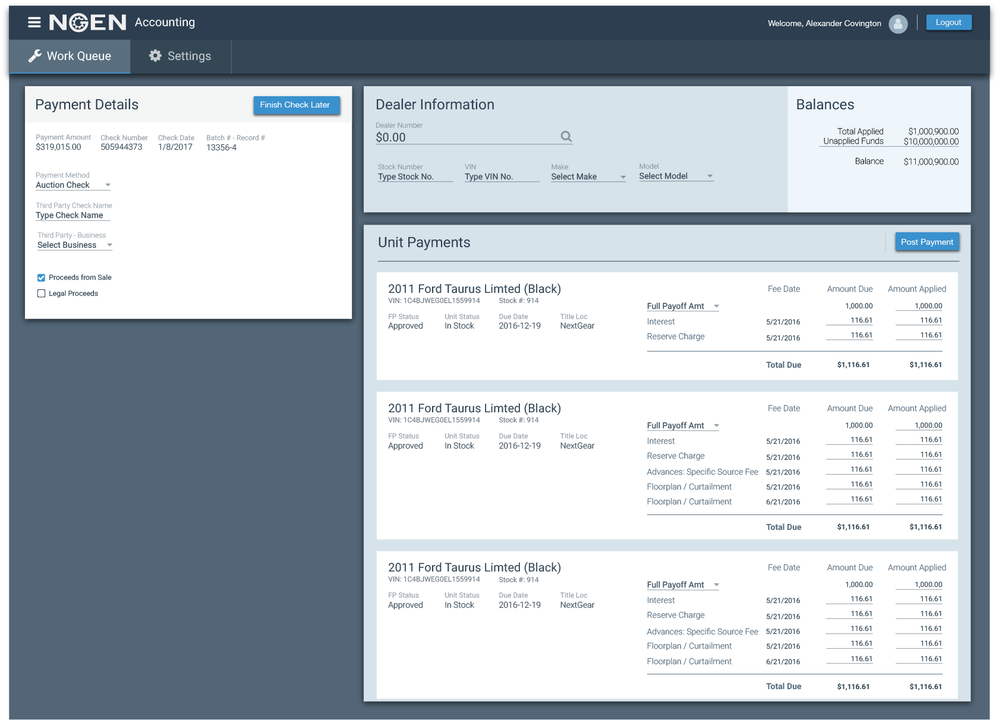

In this application redesign, we took the accounting application and applied material principles. This tested the system
This page tested tile interactivity in the sidebar. We tested card layouts on the page, but the users goal was quick processing. The extra spacing slowed our users down, so we wen with a tile approach on this screen.
On this page, We tested the information visualization of our material design usage. We tested some pop-up tile effects for the "Details on Demand" principle of information visualization, and users loved being able to drill down into detail.
On this page, we tested the use of different tabs in material design.
Outcomes
By the completion of this project, we had a better inventory of components currently used, and the effectiveness of the Material Redesign. We were able to apply material design and establish a design system which helped create consistency across multiple applications impacting 300+ interal users.